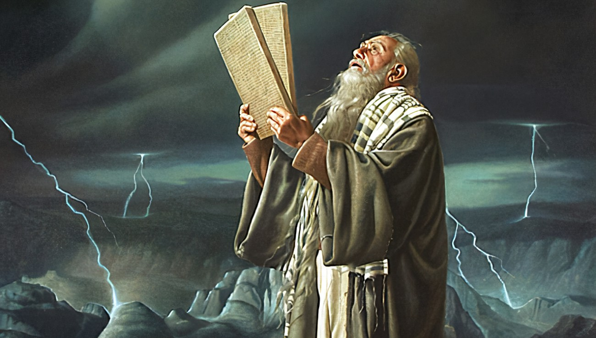
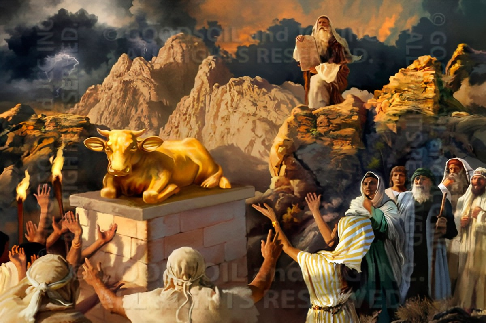
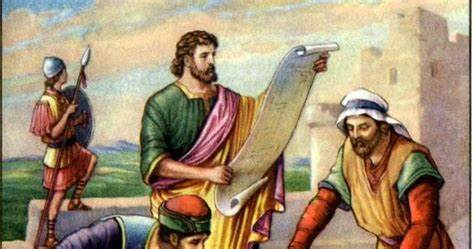
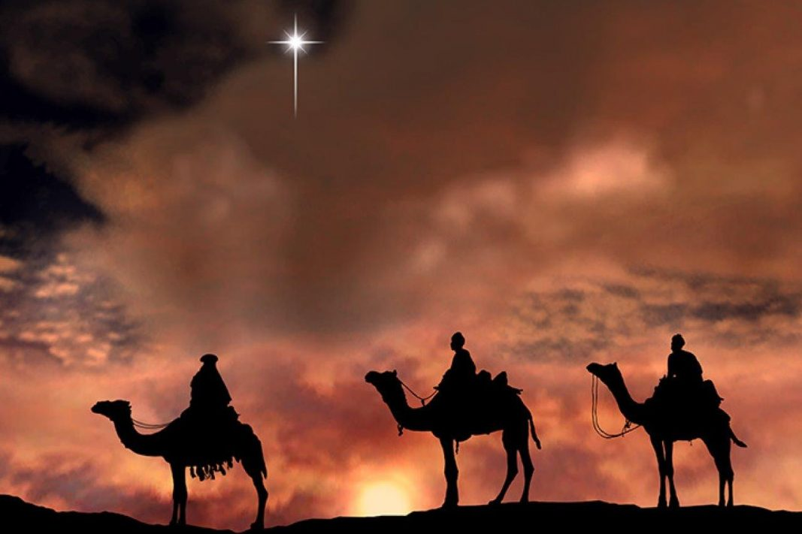
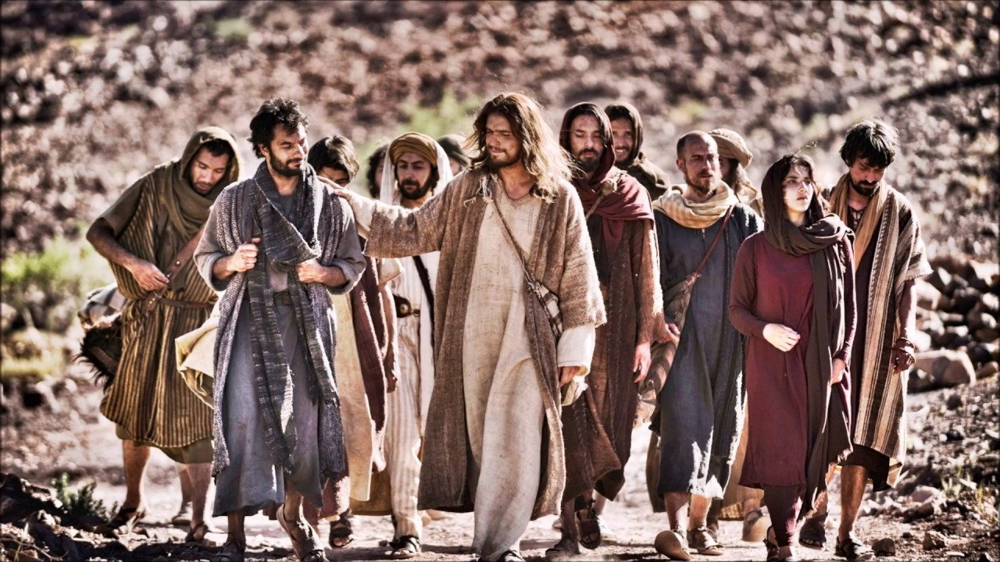
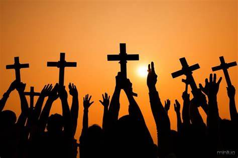

Do Início ao Fim
O Início e o Desenvolvimento da Civilização na Perspectiva Bíblica
No princípio, Deus criou os céus e a terra, trazendo ordem ao caos e vida à existência. Em seis dias, Ele formou a luz, os mares, a terra, os astros, os animais e, finalmente, o homem e a mulher, criados à Sua imagem e semelhança. Adão e Eva foram colocados no Jardim do Éden, onde tinham comunhão direta com Deus. No entanto, ao desobedecerem ao mandamento divino, o pecado entrou no mundo, trazendo consequências como o trabalho árduo, a dor e a morte.
A humanidade se multiplicou, mas a corrupção moral cresceu tanto que Deus decidiu enviar um dilúvio para purificar a terra. Noé, um homem justo, foi escolhido para construir uma arca e salvar sua família e os animais. Após o dilúvio, Deus fez uma aliança com Noé, prometendo nunca mais destruir a terra com água. A humanidade se espalhou novamente, mas, no episódio da Torre de Babel, a arrogância humana levou à confusão das línguas e à dispersão dos povos.

Deus então chamou Abraão, prometendo fazer dele uma grande nação e abençoar todas as famílias da terra por meio de sua descendência. Essa promessa foi passada a Isaque e Jacó, cujos doze filhos se tornaram as tribos de Israel. Após um período de escravidão no Egito, Deus levantou Moisés para libertar Seu povo e estabelecer uma aliança no Monte Sinai, entregando os Dez Mandamentos e as leis que guiariam Israel.
Durante a conquista de Canaã, sob a liderança de Josué, o povo de Israel se estabeleceu na terra prometida. No período dos juízes, Deus levantou líderes como Débora, Gideão e Sansão para libertar Israel de seus opressores. A monarquia foi estabelecida com Saul, seguido por Davi, um homem segundo o coração de Deus, e Salomão, que construiu o Templo em Jerusalém. No entanto, após Salomão, o reino se dividiu em Israel (Norte) e Judá (Sul), e a idolatria levou ambos ao declínio.
Profetas como Isaías, Jeremias e Ezequiel foram enviados para chamar o povo ao arrependimento, mas a desobediência persistiu. Israel foi conquistado pela Assíria, e Judá pelo Império Babilônico, resultando no exílio do povo. Durante o cativeiro, figuras como Daniel e Ester destacaram-se pela fé e fidelidade a Deus. Após setenta anos, o povo retornou a Jerusalém sob o decreto de Ciro, rei da Pérsia, e reconstruiu o Templo e os muros da cidade, liderados por Zorobabel, Esdras e Neemias.
O Antigo Testamento termina com a expectativa de um Messias prometido, que traria restauração e cumpriria as promessas de Deus para Seu povo. Essa narrativa prepara o caminho para o Novo Testamento, onde a história da redenção alcança seu clímax em Jesus Cristo.
De Jesus até os dias atuais
A Jornada do Cristianismo
O Novo Testamento começa com a vinda de Jesus Cristo, o Messias prometido no Antigo Testamento. Nascido em Belém, Jesus cresceu em Nazaré e, aos 30 anos, iniciou Seu ministério público. Ele pregou o Reino de Deus, realizou milagres, curou enfermos e ensinou sobre amor, perdão e justiça. Sua mensagem revolucionária atraiu discípulos, mas também a oposição das autoridades religiosas e políticas da época.
Após três anos de ministério, Jesus foi traído, crucificado e, ao terceiro dia, ressuscitou, cumprindo as profecias e confirmando Sua vitória sobre a morte. Antes de ascender aos céus, Ele comissionou Seus discípulos a levar a mensagem do Evangelho a todas as nações, prometendo o Espírito Santo para guiá-los.
No dia de Pentecostes, o Espírito Santo desceu sobre os discípulos, e a Igreja primitiva nasceu. Sob a liderança dos apóstolos, como Pedro e Paulo, o cristianismo se espalhou rapidamente pelo Império Romano, enfrentando perseguições, mas também conquistando corações. As cartas do Novo Testamento, escritas por Paulo, Pedro, João e outros, foram fundamentais para fortalecer e orientar as primeiras comunidades cristãs.
No século IV, o cristianismo foi oficializado como religião do Império Romano pelo imperador Constantino, marcando uma virada histórica. A Igreja passou a se organizar institucionalmente, e concílios ecumênicos, como o de Niceia, definiram as doutrinas centrais da fé cristã. Durante a Idade Média, a Igreja Católica Romana tornou-se uma força dominante na Europa, influenciando cultura, política e educação.
No século XVI, a Reforma Protestante, liderada por figuras como Martinho Lutero e João Calvino, questionou práticas da Igreja e reafirmou princípios como a salvação pela fé e a autoridade das Escrituras. Esse movimento resultou na criação de diversas denominações protestantes e em uma maior ênfase na leitura e interpretação pessoal da Bíblia.

Nos séculos seguintes, o cristianismo se expandiu para além da Europa, chegando às Américas, África, Ásia e Oceania por meio de missões e colonizações. A partir do século XIX, avivamentos e movimentos de renovação espiritual, como o Pentecostalismo, trouxeram novas dinâmicas à fé cristã, enfatizando a experiência pessoal com Deus e os dons do Espírito Santo.
Hoje, o cristianismo é a maior religião do mundo, com mais de 2 bilhões de seguidores. Ele se manifesta em uma diversidade de tradições, desde a Igreja Católica e as denominações protestantes até as igrejas ortodoxas e os movimentos independentes. A mensagem de Jesus continua a inspirar milhões de pessoas, promovendo valores como amor, justiça, compaixão e esperança em um mundo em constante transformação.
E então virá o Fim
A Esperança Cristã no Fim dos Tempos
Segundo a Bíblia, o fim dos tempos será marcado por eventos grandiosos e solenes, que culminarão na consumação do plano divino para a humanidade. Esse período é descrito em livros como Daniel, no Antigo Testamento, e Apocalipse, no Novo Testamento, e traz tanto advertências quanto promessas de esperança para os que creem.
O fim começará com um tempo de grande tribulação, como Jesus alertou em Mateus 24. Haverá guerras, fomes, terremotos e perseguições aos fiéis. O anticristo surgirá como um líder enganador, prometendo paz e solução para os problemas do mundo, mas sua verdadeira intenção será se opor a Deus e aos Seus seguidores. Esse período será tão intenso que, sem a intervenção divina, nenhuma vida seria salva.

No entanto, no auge da tribulação, Jesus Cristo retornará em glória, como prometeu antes de ascender aos céus. Sua vinda será visível e poderosa, acompanhada por anjos e com grande trombeta. Ele julgará as nações, separando os justos dos ímpios, e estabelecerá Seu reino de justiça e paz. Os mortos em Cristo ressuscitarão primeiro, e os que estiverem vivos serão transformados, arrebatados para encontrar o Senhor nos ares (1 Tessalonicenses 4:16-17).

O ápice do plano de salvação será a criação de novos céus e nova terra, onde a justiça habitará (2 Pedro 3:13). A Nova Jerusalém, a cidade santa, descerá dos céus, preparada como uma noiva adornada para seu marido (Apocalipse 21:2). Essa cidade será o lar eterno dos salvos, um lugar de perfeita comunhão com Deus. Nela, não haverá mais morte, dor, lágrimas ou pecado, pois as coisas antigas terão passado (Apocalipse 21:4).
A Nova Jerusalém é descrita como uma cidade de ouro puro, com fundamentos adornados por pedras preciosas e portas de pérola. O rio da água da vida fluirá do trono de Deus, e a árvore da vida estará disponível para a cura das nações (Apocalipse 22:1-2). Ali, os salvos viverão em plenitude, adorando a Deus para sempre.

A esperança cristã no fim dos tempos não é de medo, mas de expectativa e alegria. Os cristãos aguardam a volta de Jesus, não como um evento assustador, mas como a realização de todas as promessas de Deus. É a certeza de que o mal será derrotado, a justiça prevalecerá e a criação será restaurada à sua glória original.
Enquanto aguardamos esse dia, somos chamados a viver em santidade, pregando o Evangelho e servindo ao próximo, sabendo que nossa verdadeira cidadania está nos céus (Filipenses 3:20). O fim, portanto, não é o fim, mas o começo de uma eternidade de paz, alegria e comunhão com Deus.